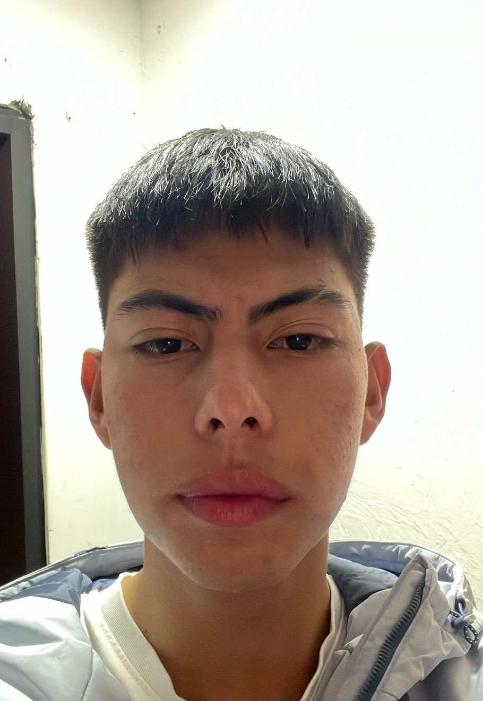

Kevin Moreno
Profesional especializado en el estudio de la relación entre el cerebro y el comportamiento humano.

 +57
+57
320 4845804

Hola!, Soy Kevin Daniel Moreno Alvarado
psicólogo neuropsicológico especializado en la atención de adolescentes y jóvenes
Mi trabajo se enfoca en la evaluación, diagnóstico y tratamiento de trastornos neuropsicológicos que afectan el desarrollo y bienestar de esta población.
Dejame contarte..
El objetivo principal de mi profesión es apoyar a los adolescentes y jovenes, a superar desafíos neuropsicológicos como TDAH, depresión, ansiedad y trastornos del estado de ánimo, que pueden afectar su rendimiento académico y social..
Mi compromiso es proporcionar un servicio integral y personalizado, apoyando a los adolescentes y jóvenes a alcanzar su máximo potencial y mejorar su calidad de vida.
- Evaluación y tratamiento de trastornos neuropsicológicos.
- Desarrollo de programas de educación emocional y social.
- Consultoría para padres y educadores.
- Investigación y desarrollo de intervenciones efectivas para la salud mental en la adolescencia.